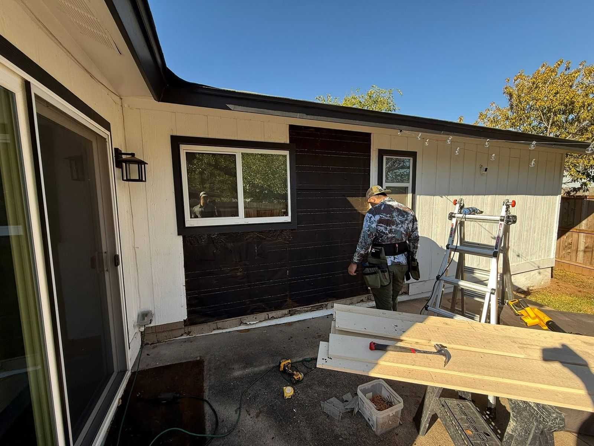

Siding repair is the job people put off longest, because a few bad boards on the side of the house nobody looks at does not feel urgent. It usually is not urgent. It is also the one exterior problem that gets meaningfully more expensive the longer you leave it, because what starts as a board turns into sheathing, and sheathing turns into framing.
This guide covers what siding repair costs in the Austin area in 2026, the honest test for whether to repair or replace, and what goes wrong on Central Texas houses specifically.
Siding repair cost in Austin, 2026
| Repair | Typical cost | Notes |
|---|---|---|
| A few damaged boards, one elevation | $450 to $1,200 | Cut out, replace, caulk, paint to match |
| Section repair with sound sheathing behind | $900 to $2,200 | The most common call we get |
| Section repair with rotted sheathing | $1,400 to $4,500 | Sheathing, wrap and flashing all get redone |
| Woodpecker or impact hole patch | $350 to $900 | Per hole, including flashing the repair properly |
| Trim, fascia or soffit rot repair | $600 to $2,800 | Usually where the water was entering |
| Re-caulk and seal an elevation | $450 to $1,400 | Cheap maintenance that prevents the list above |
| Full single elevation replacement | $6,000 to $14,000 | The point repairs stop making sense |
| Hail damage repair, insurance job | Deductible | Often paid alongside the roof claim |
Greater Austin pricing for 2026, including material, labour, disposal and paint. The single biggest variable is whether the sheathing behind the siding is dry.
The honest repair-or-replace test
Every siding contractor will happily sell you either one. Here is the test we use when John walks a house, and you can apply most of it yourself before anybody quotes you.
Repair is the right call when the damage is confined to one area, the rest of the elevation still holds paint, the boards are not swelling anywhere else, and the material is still available to match. A hail strike, a sprinkler corner, a woodpecker hole, a section hit by a falling limb. These are events, not conditions, and repairing an event is good money.
Replacement is the right call when any of these are true:
- More than about a quarter of an elevation has failed. Below that, patching is cheaper. Above it, you are paying repair rates for what is effectively a replacement, and it will look like a patchwork.
- This wall has been patched before. A second repair on the same elevation is the wall telling you the problem is the material, not the damage.
- The bottom course is soft along its length. That is not localised. That is the whole wall wicking.
- The paint is failing again within two or three years of a repaint. Paint does not fail that fast on its own. It fails that fast because the board underneath is holding moisture.
- You cannot match it. Discontinued profiles are common on Austin homes built in the late nineties. A visible mismatch on a street-facing elevation costs you more at resale than the repair saved.
- You are repainting the whole house anyway. If the elevation is coming down to bare board for prep, the marginal cost of replacing it is much smaller than it looks.
The number that decides most of these: once a repair quote on one elevation passes roughly $6,000, replacing that elevation outright usually costs about the same, comes with new wrap and flashing behind it, and does not leave you with a visible seam.
What goes wrong on Austin houses
Six things account for nearly every siding repair we do in Travis, Hays and Williamson counties. Five of them are water and only one is weather.
1. Sprinklers
The single most common cause, and the most preventable. A head that throws onto the bottom course soaks the same eighteen inches of wall several times a week for years. Hardboard and masonite absorb it, swell, and delaminate from the bottom edge up.
If you take one thing from this guide, go out and watch your sprinklers run a full cycle. Then move whatever is hitting the house.
2. No clearance at grade
Siding needs a specified gap between its bottom edge and the soil, the patio, or the driveway. Installed tight to a hard surface it wicks moisture continuously and never dries.
It also voids the manufacturer warranty on fiber cement. This is the most common installation fault we find on re-sides that were done cheaply, and on houses where a patio or flowerbed was added later and raised the grade.
3. Failed caulk at joints and openings
Caulk is a consumable, not a permanent part of the house. It has a service life of roughly five to ten years in this UV.
When it goes, butt joints and the seals around windows and doors open up, and water goes directly onto the wrap. Re-caulking an elevation costs a few hundred dollars and prevents several thousand.
4. Hail and wind
Central Texas gets hail most springs. Vinyl cracks outright, which is obvious. Hardboard bruises, which is not, and the bruise opens up over the following year.
Wind lifts panels and loosens fasteners, particularly on gable ends and second storeys. This is the category insurance pays for, which is why it is worth having looked at after a storm even when the wall looks fine from the driveway.
5. Woodpeckers
More common around Austin than people expect, especially on hardboard and cedar, and especially on wooded lots out toward the Hill Country. They drill for insects or nesting cavities.
The hole itself is a small repair. The water that has been running into the wall through it for a season is not.
6. Flashing that was never right
Where a roof meets a wall, where a deck ledger passes through, above windows, at chimney sides. If the flashing detail was wrong at build, the siding above it will keep failing no matter how many times it is patched. Any repair that does not fix the flashing is a repair you will pay for again.
Repairing each material
Hardboard and masonite. Most Austin homes from the late nineties and early two thousands have it on at least some elevations.
It repairs fine in the short term and it is genuinely at end of life across the region. If a hardboard elevation needs its second repair, put the money toward replacing it instead.
Fiber cement, including James Hardie. Repairs well.
Individual planks come out and go back without disturbing the courses above, and the patch disappears once it is painted. The catch is ColorPlus factory finish, where a site-painted patch will not weather the same as the factory coating and the difference shows within a couple of years on a sunny wall.
LP SmartSide and engineered wood. Repairs cleanly and matches well, because the profiles are current rather than discontinued.
Cut ends must be sealed, every time. An unsealed cut end on engineered wood is a slow leak with a five-year fuse.
Vinyl. The easiest and cheapest material to repair, and the hardest to match. Vinyl fades noticeably, so a new panel next to a twenty-year-old one reads as new even in the same colour.
Repair it if you have leftover panels from the original build. Otherwise plan on doing a full elevation to a break line.
Cedar and wood siding. Very repairable, and the material is still readily available. Expect to stain or paint the full elevation afterwards rather than spot-finishing, because new cedar takes stain differently from cedar that has been on a wall for fifteen years.
The matching problem nobody mentions in the quote
This is the part that surprises people, so we would rather say it before the invoice than after.
Matching the board is usually straightforward. Matching the finish often is not.
Paint on an exterior wall in Central Texas fades measurably in three years and substantially in eight. A patch painted to the original colour code will be visibly brighter than the wall around it.
There are two honest answers. Spot-paint the patch, accept that it will show for a year or two until it weathers in, and save the money. Or paint the full elevation out to a natural break line, corner to corner, so there is no visible edge at all.
On a back wall, spot-paint. On the elevation your house is photographed from, paint the wall. We price both on every repair quote so it is your call and not a surprise.
Not sure which one you are looking at? Send a few photos of the worst area and we will tell you honestly whether it is a repair or whether you are throwing money at a wall that needs replacing. No charge, no visit required to get a straight answer.
Get a straight answer →What insurance covers, and what it does not
The dividing line insurers use is sudden versus gradual.
Normally covered: hail, wind, impact from a falling limb, damage from a covered event elsewhere on the house. After a Central Texas hail spring, siding damage is frequently paid on the same claim as the roof, and plenty of homeowners replace the roof without ever having the walls looked at.
Normally not covered: rot, sprinkler damage, gradual water intrusion, failed caulk, ordinary wear, and anything the adjuster can call a maintenance issue. That covers most of the six causes above, which is worth knowing before you build a budget around a claim.
Two practical rules. Do not let anyone start work before the adjuster has inspected, because unrepaired damage is the evidence.
And check your policy deadline for filing after a storm, which is often shorter than people assume. We do free damage inspections, document what we find with photographs, and meet the adjuster at the house so somebody is there who can point at what they are looking at.
What a siding repair involves
- Inspection. Every elevation, not just the one you called about. Water travels, and the wall that looks worst is frequently not the wall with the problem.
- Quote with the sheathing rate in it. Nobody knows what is behind the siding until it comes off. An honest quote prices the repair and states the per-sheet rate for sheathing if it is needed, so opening the wall is not a renegotiation.
- Remove and assess. Damaged boards come off and the substrate gets checked with a moisture meter, not a guess.
- Fix the cause. Flashing corrected, clearance restored, sprinkler head flagged. A repair that leaves the cause in place is a deposit on the next repair.
- Wrap, flash, install. New weather barrier behind the patch, proper fastener spacing, joints detailed to shed water.
- Caulk and finish. To your chosen extent, patch or full elevation.
- Photos and walkthrough. We photograph anything we find behind the wall before we cover it up, and you get those whether or not you want them.

Five ways people waste money on siding repair
- Painting over it. Paint on a swollen board is a cosmetic fix with a one-year life. It also hides the problem from the next inspection, including the one before you sell.
- Patching without fixing the cause. The most expensive repair is the third one on the same wall.
- Going over the old siding rather than removing it. It hides exactly the rot the repair was meant to find, and it throws off trim depth at every window.
- Repairing four times instead of replacing once. Four $1,500 repairs over five years on the same hardboard elevation costs more than the $8,000 replacement would have, and you still have hardboard.
- Skipping the storm inspection. The free one, after hail, while the claim window is open. That is the only version of this work somebody else might pay for.
Where we do siding repair
We repair and replace siding across greater Austin, including South Austin, Cedar Park, Round Rock, Brushy Creek, Buda, Kyle, Leander, Lakeway, Dripping Springs and Manchaca, throughout Travis, Hays and Williamson counties.
Looking at a bigger job than a repair? Our 2026 Hardie siding cost guide covers full replacement pricing material by material, and we have dedicated pages for siding across Austin and siding installation in Cedar Park. If the damage came from a storm, our storm damage guide covers how the claim process runs.
Siding repair questions, answered
How much does siding repair cost in Austin?
Most siding repairs in the Austin area land between $450 and $2,800. A few damaged boards on one elevation is usually $450 to $1,200. A larger section with rotted sheathing behind it runs $1,400 to $4,500. Once a repair passes roughly $6,000 on a single elevation, replacing that whole elevation usually costs about the same and looks far better.
Is it better to repair or replace siding?
Repair when the damage is localised, the rest of the wall is sound, and you can match the material. Replace when more than about a quarter of an elevation has failed, when the same wall has been patched before, when the substrate is wet across a wide area, or when you cannot match the existing boards. On a house with twenty-year-old hardboard, repeated patching usually costs more over five years than replacing the elevation once.
Can you repair Hardie board siding?
Yes, and fiber cement repairs well. Individual planks can be cut out and replaced without disturbing the courses above, and the patch is invisible once it is painted. The harder part is colour matching on a ColorPlus factory finish, because a site-painted patch will not weather identically to the factory coating. On a sunny elevation that difference shows up in a couple of years.
What causes siding to rot in Central Texas?
Almost always water that could not get out. The three usual sources are sprinkler heads hitting the bottom course, siding installed too tight to the grade or a hard surface so it wicks moisture up, and failed caulk at butt joints and around windows. Hail and wind do visible damage, but the quiet sprinkler and clearance problems cause more rot in the Austin area than storms do.
Will insurance pay for siding repair?
For sudden damage, frequently yes. Hail, wind and impact are normally covered, and siding is often paid on the same claim as the roof after a Central Texas hail spring. Rot, gradual water damage and ordinary wear are not covered, because insurers treat those as maintenance. Do not have any work started before your adjuster has inspected it.
How long does siding repair take?
A localised repair on one elevation is usually one to two days. If sheathing has to come out and dry, add a day. Repairs that turn into a full elevation replacement once the wall is open run three to five days. We quote the sheathing repair rate up front so opening the wall does not turn into a renegotiation.
Can you match my existing siding?
Often, and we will tell you honestly before we start if we cannot. Profile and exposure are usually matchable because fiber cement and hardboard profiles are fairly standard. Colour is the harder half. Twenty-year-old paint has faded, so a perfect match means repainting the full elevation to a break line rather than spot-painting the patch. We price both options so you can choose.
Do woodpeckers damage siding in Austin?
Yes, and it is more common here than people expect, mostly on hardboard and on cedar. They drill for insects or to nest, and a hole left open lets water straight into the wall. Patching the hole without addressing why the wall attracted them tends to repeat. Fiber cement is the one material they largely leave alone.
Getting more than one quote? The Austin contractor hiring playbook covers what to compare and the warning signs worth walking away from.
Deciding between fiber cement and engineered wood? Read our side-by-side comparison of Hardie vs LP SmartSide siding for Austin homes.